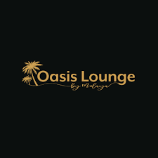

Cafe
Starbucks
begins in 1971 along the cobblestone streets of Seattle’s historic Pike Place Market. It was here where Starbucks opened its first store, offering fresh-roasted coffee beans, tea and spices from around the world for our customers to take home. Our name was inspired by the classic tale, “Moby-Dick,” evoking the seafaring tradition of the early coffee traders.
Dunkin Dounts

Bill Rosenberg opened Open Kettle in 1948, a restaurant selling donuts and coffee in Quincy, Massachusetts (a suburb of Boston), but he changed the name in 1950 to Dunkin' Donuts after discussing with company executives. He conceived the idea for the restaurant after his experiences selling food in factories and at construction sites, where donuts and coffee were the two most popular items. The restaurant was successful, and Rosenberg sold franchises to others starting in 1955.
Krispy Kreme

Vernon Rudolph bought a secret yeast raised doughnut recipe from a New Orleans French chef, rented a building in what is now historic Old Salem in Winston-Salem, North Carolina, and began selling its Krispy Kreme doughnuts on July 13, 1937 to local grocery stores. The delicious scents of cooking doughnuts drifted into the streets, and passersby stopped to ask if they could buy hot doughnuts. So he cut a hole in an outside wall and started selling Original Glazed doughnuts directly to customers on the sidewalk.
ZEN Cafe & Lounge
ZEN Cafe an egyptian cafe and lounge located in Maadi.
Oasis Lounge
The Oasis Cafe opened in 1957 as The Highway Man. It opened as a service station, diner, and of course, the bait shop.
Beanos Cafe

Beanos was a second-hand record shop, once the largest in Europe, located in the South London suburb of Croydon. It was founded by musician David Lashmar in 1975 and continued to expand through three increasingly larger shops, ending up in an old printing works in Middle Street in the 1990s.